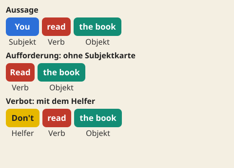

Open the book! Don't run!
Mit einem KI-Tutor lernen
Ein KI-Tutor erklärt dir diese Seite und hilft dir bei den Aufgaben. Wähl deinen Assistenten:
Mit Claude öffnen Mit ChatGPT öffnen Mit Mistral Vibe öffnen
Du nutzt dein eigenes Konto beim Anbieter. Der Assistent ist kein Angebot von lernapps.net: lernapps liefert nur Inhalte und Aufgaben. Die Wahl gilt für alle Seiten, nur auf diesem Gerät.
Mr Hill gibt Anweisungen

Von links: Sophie (Zöpfe), Amir (Brille) und Peter (gelbe Jacke) hören zu. Rechts spricht Mr Hill (graue Haare).
Quelle: eigene Zeichnung. Lizenz: CC-BY-4.0.Mr Hill ruft Peter etwas zu: „Open the book, Peter.“ Das kennst du schon vom Klassenzimmer-Poster, Anweisungen wie „Stand up.“ und „Sit down.“
Aufgabe
Lösung
Das Wort you, also das Subjekt. richtige Antwort
Mr Hill spricht Peter direkt an. Er sagt nicht you, es ist ja klar, wer gemeint ist.
Das Wort open, also das Verb.
Open steht in beiden Sätzen und ist das Verb. Es steht bei Mr Hill sogar ganz vorne.
Das Wort book, also das Objekt.
The book steht in beiden Sätzen, es ist das Objekt.
Wenn man jemanden direkt auffordert, braucht man keine Subjektkarte.
Das kannst du danach: Du sagst auf Englisch, was jemand tun soll und was er nicht tun soll.
Ohne Subjekt, und mit don't
Eine Aufforderung hat auf der Satzleiste keine blaue Karte. Das Verb steht ganz vorn, ohne Endung: Read the book. Ein Verbot beginnt mit der gelben Karte don't. Das ist dein erster Helfer. Danach geht das Verb ohne Endung weiter: Don't read the book.

Aussage, Aufforderung und Verbot. In der Aufforderung fehlt die blaue Karte. Im Verbot kommt die gelbe dazu.
Quelle: eigene Zeichnung. Lizenz: CC-BY-4.0.| Aufforderung | Verbot |
|---|---|
| Sit down. | Don't sit down. |
| Open the door. | Don't open the door. |
| Stand up. | Don't stand up. |
Merke
Aufforderung: Verb am Anfang, keine Subjektkarte. Verbot: Don't und das Verb. Mit please wird es höflich: Close the window, please. Don't ist die Kurzform von do not.
| Wort oder Ausdruck | Bedeutung |
|---|---|
| open | öffnen / aufmachen |
| close | schließen / zumachen |
| run | rennen |
| talk | sprechen / reden |
| write | schreiben |
| listen | zuhören |
| listen to | zuhören bei |
| read | lesen |
| door | Tür |
| window | Fenster |
| book | Buch |
| name | Name |
| your | dein / euer |
| here | hier |
| in the classroom | im Klassenzimmer |
| please | bitte |
| stand up | aufstehen |
| sit down | sich hinsetzen |
Übung
Aufgabe
Lösung
Richtige Antwort: 1. Don't, 2. run, 3. in the classroom
Die gelbe Karte Don't steht vorn, dann das Verb ohne Endung und dann der Ort.
Aufgabe
Wähle das richtige Wort.
Tipp
Bei einer Aufforderung steht das Verb ganz vorn. Ein Verbot beginnt mit Don't.
- Mach bitte das Fenster auf. → … the window, please.
- Renn nicht im Klassenzimmer. → … run in the classroom.
- Hört zu. → ….
- Sprich hier nicht. → … talk here.
Lösung
- Open the window, please.
- Don't run in the classroom.
- Listen.
- Don't talk here.
Aufgabe
Schreibe die ganze Aufforderung oder das ganze Verbot.
Tipp
Fange mit dem Verb an. Bei einem Verbot kommt vorher die gelbe Karte Don't.
- close · the door
- write · your name
- don't · open · the window
- don't · run · here
Lösung
- Close the door.
- Write your name.
- Don't open the window. (auch richtig: Do not open the window.)
- Don't run here. (auch richtig: Do not run here.)
Aufgabe
In jedem Satz steckt ein Fehler. Schreibe den Satz richtig.
Tipp
Zähle die Karten. Eine Aufforderung hat keine blaue Karte, und nach Don't kommt das Verb sofort.
- You write here.
- Don't to run here.
Lösung
- Write here.
- Don't run here. (auch richtig: Do not run here.)
Aufgabe
Schreibe den Satz auf Englisch.
Tipp
Sprich den Satz zuerst so, als wärst du Mr Hill.
- Mach bitte die Tür zu.
- Sprich nicht, Peter.
- Schreibt eure Namen.
Lösung
- Close the door, please. (auch richtig: Please close the door.)
- Don't talk, Peter. (auch richtig: Do not talk, Peter.; Peter, don't talk.; Peter, do not talk.)
- Write your names. (auch richtig: Write your name.)
Aufgabe
Hör zu und schreibe, was du hörst.
- KI
- KI
- KI
Lösung
- Please read the book.
- Don't write here, please. (auch richtig: Do not write here, please.)
- Please listen, Amir.
Regeln für die Klasse
Aufgabe
Hör zu, sprich nach und nimm dich auf. Vergleiche dann mit dem Original.
Tipp
Hör den Satz zuerst. Sprich dann langsam nach, so wie ein Lehrer.
- Read your book.KI
- Sit down and listen.KI
- Stand up and sit down.KI
Zum Aufnehmen braucht diese Aufgabe JavaScript. Die Beispiele kannst du auch ohne anhören.
Lösung
- Read your book.
- Sit down and listen.
- Stand up and sit down.
Offene Aufgabe
Mr Hill macht ein Plakat mit Klassenregeln. Schreibe zwei Aufforderungen und zwei Verbote für das Klassenzimmer.
Eine gute Antwort enthält:
Lösung
Open your books. Listen, please. Don't talk here. Don't read here.
Wie es weitergeht
Das Plakat hängt an der Wand, und am Rand der Satzleiste liegt jetzt eine gelbe Karte. Ellie fragt Sophie: „Does Peter like pizza?“ Auch hier springt der gelbe Helfer ins Spiel. Wie, zeigt das nächste Kapitel.